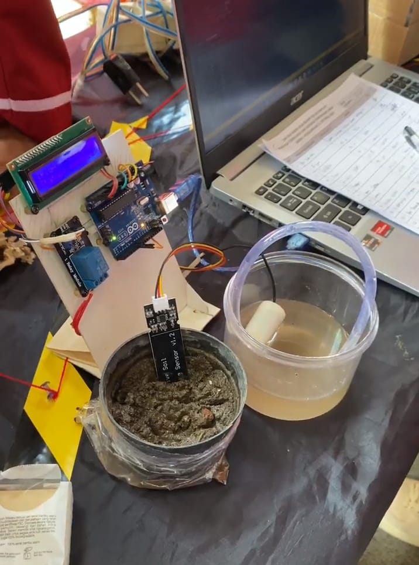

Penyiram Tanaman Berbasis Kelembapan (PENA'KE) | ÆTHERY
Kelompok ÆTHERY membuat PENA'KE (Penyiram Tanaman Berbasis Kelembapan) agar lebih mudah dalam mengelola kesuburan tanah untuk tanaman.
Melalui alat ini kita tidak perlu lagi untuk
menunggu menyiram tanaman secara manual karena akan secara otomatis
melihat dari kelembaban dari tanah tersebut sehingga akan lebih efisien. Alat ini mengukur kelembaban tanah dengan sensor,
kemudian hasil sensor disalurkan kepada pompa
air yang menyalurkan air ke tanaman.
Kembali